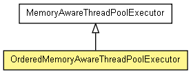

org.jboss.netty.handler.execution
类 OrderedMemoryAwareThreadPoolExecutor
java.lang.Object
 java.util.concurrent.AbstractExecutorService
java.util.concurrent.ThreadPoolExecutor
org.jboss.netty.handler.execution.MemoryAwareThreadPoolExecutor
org.jboss.netty.handler.execution.OrderedMemoryAwareThreadPoolExecutor
java.util.concurrent.AbstractExecutorService
java.util.concurrent.ThreadPoolExecutor
org.jboss.netty.handler.execution.MemoryAwareThreadPoolExecutor
org.jboss.netty.handler.execution.OrderedMemoryAwareThreadPoolExecutor
- 所有已实现的接口：
- java.util.concurrent.Executor, java.util.concurrent.ExecutorService
public class OrderedMemoryAwareThreadPoolExecutor
- extends MemoryAwareThreadPoolExecutor

一个保证来自相同通道的事件能够顺序的执行的MemoryAwareThreadPoolExecutor.
注意:该线程池继承它父类型大多数特性,所以请确定查阅MemoryAwareThreadPoolExecutor
了解基本的工作原理.
时间执行顺序
例如,让我们说说两条执行线程处理来自两条通道的事件:
-------------------------------------> Timeline ------------------------------------>
Thread X: --- Channel A (Event A1) --. .-- Channel B (Event B2) --- Channel B (Event B3) --->
\ /
X
/ \
Thread Y: --- Channel B (Event B1) --' '-- Channel A (Event A2) --- Channel A (Event A3) --->
正如所看到的, 不同通道的事件是相互独立的.也就是说,通道B的事件不会被通道A的事件阻塞,反之亦然, 除非线程池已经用完.
而且,它会保证相同通道的事件会被顺序的调用.例如,事件A2绝不会在事件A1完成之前被执行.(如果你想来自相同通道的事件同时被执行 ,请使用
MemoryAwareThreadPoolExecutor代替,尽管不被推荐.)
然而,它并不保证会为相同的通道使用相同的线程调用.相同通道的事件会被不同线程执行.例如,事件A2会被线程Y执行,而事件A1会被线程X执行.
使用不同于Channel的键去维护事件顺序
正如前一节所解释,OrderedMemoryAwareThreadPoolExecutor使用一个Channel
作为键被用来维护事件执行顺序.或者你可以继承它来改变它的行为.例如,你可以使用远程IP作为键:
public class RemoteAddressBasedOMATPE extends OrderedMemoryAwareThreadPoolExecutor {
... Constructors ...
@Override
protected ConcurrentMap<Object, Executor> newChildExecutorMap() {
// 默认实现返回一个只使用标识比较(see IdentityHashMap)的特殊的ConcurrentMap.
// 因为SocketAddress并不能使用标识比较,我们需要使用更多通用的实现.
return new ConcurrentHashMap<Object, Executor>
}
protected Object getChildExecutorKey(ChannelEvent e) {
// 使用远程IP作为键.
return ((InetSocketAddress) e.getChannel().getRemoteAddress()).getAddress();
}
// 使用public修饰可以在任何地方调用.
public boolean removeChildExecutor(Object key) {
super.removeChildExecutor(key);
}
}
请小心子执行器映射的内存溢出.你必须在键的生命周期结束后(如.来自相同IP的连接都被关闭.)调用
removeChildExecutor(Object). 而且,请紧记该键会在调用了
removeChildExecutor(Object)后再次出现.(如.一个来自旧相同IP且已被移除的新的连接.) If in
doubt, prune the old unused or stall keys from the child executor map
periodically:
RemoteAddressBasedOMATPE executor = ...;
on every 3 seconds:
for (Iterator<Object> i = executor.getChildExecutorKeySet().iterator; i.hasNext();) {
InetAddress ip = (InetAddress) i.next();
if (there is no active connection from 'ip' now &&
there has been no incoming connection from 'ip' for last 10 minutes) {
i.remove();
}
}
If the expected maximum number of keys is small and deterministic, you could
use a weak key map such as ConcurrentWeakHashMap or synchronized WeakHashMap instead of
managing the life cycle of the keys by yourself.
| 从类 java.util.concurrent.ThreadPoolExecutor 继承的嵌套类/接口 |
java.util.concurrent.ThreadPoolExecutor.AbortPolicy, java.util.concurrent.ThreadPoolExecutor.CallerRunsPolicy, java.util.concurrent.ThreadPoolExecutor.DiscardOldestPolicy, java.util.concurrent.ThreadPoolExecutor.DiscardPolicy |
|
构造方法摘要 |
OrderedMemoryAwareThreadPoolExecutor(int corePoolSize,
long maxChannelMemorySize,
long maxTotalMemorySize)
创建一个实例. |
OrderedMemoryAwareThreadPoolExecutor(int corePoolSize,
long maxChannelMemorySize,
long maxTotalMemorySize,
long keepAliveTime,
java.util.concurrent.TimeUnit unit)
创建一个实例. |
OrderedMemoryAwareThreadPoolExecutor(int corePoolSize,
long maxChannelMemorySize,
long maxTotalMemorySize,
long keepAliveTime,
java.util.concurrent.TimeUnit unit,
ObjectSizeEstimator objectSizeEstimator,
java.util.concurrent.ThreadFactory threadFactory)
创建一个实例. |
OrderedMemoryAwareThreadPoolExecutor(int corePoolSize,
long maxChannelMemorySize,
long maxTotalMemorySize,
long keepAliveTime,
java.util.concurrent.TimeUnit unit,
java.util.concurrent.ThreadFactory threadFactory)
创建一个实例. |
| 从类 java.util.concurrent.ThreadPoolExecutor 继承的方法 |
allowCoreThreadTimeOut, allowsCoreThreadTimeOut, awaitTermination, getActiveCount, getCompletedTaskCount, getCorePoolSize, getKeepAliveTime, getLargestPoolSize, getMaximumPoolSize, getPoolSize, getQueue, getRejectedExecutionHandler, getTaskCount, getThreadFactory, isShutdown, isTerminated, isTerminating, prestartAllCoreThreads, prestartCoreThread, purge, setCorePoolSize, setKeepAliveTime, setMaximumPoolSize, setRejectedExecutionHandler, setThreadFactory, shutdown, shutdownNow |
| 从类 java.util.concurrent.AbstractExecutorService 继承的方法 |
invokeAll, invokeAll, invokeAny, invokeAny, submit, submit, submit |
| 从类 java.lang.Object 继承的方法 |
equals, getClass, hashCode, notify, notifyAll, toString, wait, wait, wait |
OrderedMemoryAwareThreadPoolExecutor
public OrderedMemoryAwareThreadPoolExecutor(int corePoolSize,
long maxChannelMemorySize,
long maxTotalMemorySize)
- 创建一个实例.
- 参数：
corePoolSize - 活动线程的最大数maxChannelMemorySize - 每通道队列时间的最大总大小.指定0则禁止.maxTotalMemorySize - 该池队列事件的最大总大小.指定0则禁止.
OrderedMemoryAwareThreadPoolExecutor
public OrderedMemoryAwareThreadPoolExecutor(int corePoolSize,
long maxChannelMemorySize,
long maxTotalMemorySize,
long keepAliveTime,
java.util.concurrent.TimeUnit unit)
- 创建一个实例.
- 参数：
corePoolSize - 活动线程的最大数maxChannelMemorySize - 每通道队列时间的最大总大小.指定0则禁止.maxTotalMemorySize - 该池队列事件的最大总大小.指定0则禁止.keepAliveTime - 一个非活动线程关闭自己的时间总数.unit - keepAliveTime的时间单位
OrderedMemoryAwareThreadPoolExecutor
public OrderedMemoryAwareThreadPoolExecutor(int corePoolSize,
long maxChannelMemorySize,
long maxTotalMemorySize,
long keepAliveTime,
java.util.concurrent.TimeUnit unit,
java.util.concurrent.ThreadFactory threadFactory)
- 创建一个实例.
- 参数：
corePoolSize - 活动线程的最大数maxChannelMemorySize - 每通道队列时间的最大总大小.指定0则禁止.maxTotalMemorySize - 该池队列事件的最大总大小.指定0则禁止.keepAliveTime - 一个非活动线程关闭自己的时间总数.unit - keepAliveTime的时间单位threadFactory - 该池的ThreadFactory
OrderedMemoryAwareThreadPoolExecutor
public OrderedMemoryAwareThreadPoolExecutor(int corePoolSize,
long maxChannelMemorySize,
long maxTotalMemorySize,
long keepAliveTime,
java.util.concurrent.TimeUnit unit,
ObjectSizeEstimator objectSizeEstimator,
java.util.concurrent.ThreadFactory threadFactory)
- 创建一个实例.
- 参数：
corePoolSize - 活动线程的最大数maxChannelMemorySize - 每通道队列时间的最大总大小.指定0则禁止.maxTotalMemorySize - 该池队列事件的最大总大小.指定0则禁止.keepAliveTime - 一个非活动线程关闭自己的时间总数.unit - keepAliveTime的时间单位threadFactory - 该池的ThreadFactoryobjectSizeEstimator - 该池的ObjectSizeEstimator